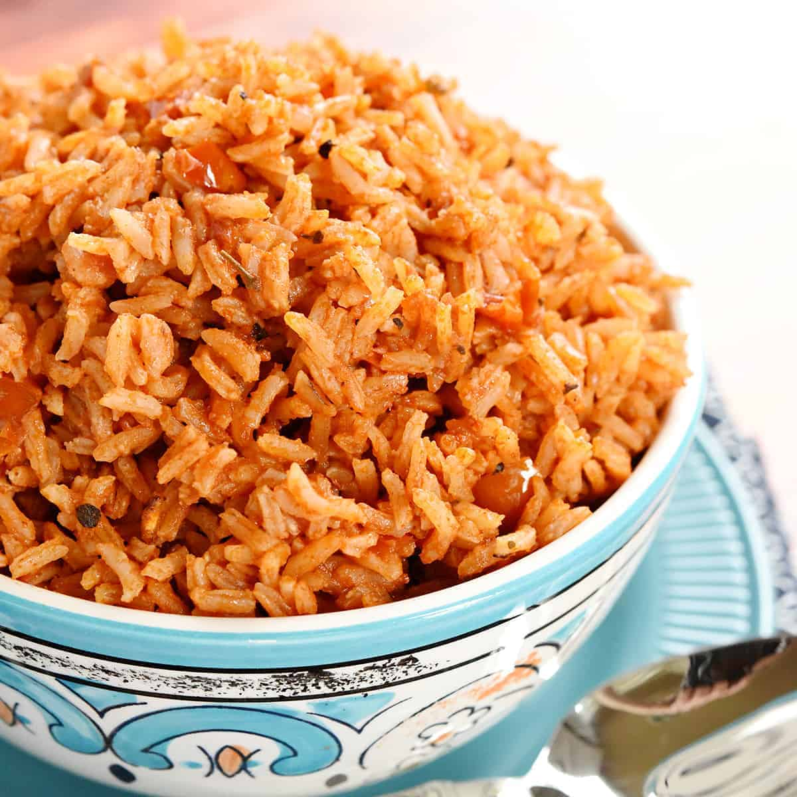

Spanish Rice

About this Spanish Rice
This is a Tex-Mex inspired rice dish that pairs perfectly with birria, beans, salsa, or other fixings to your taste.
Ingredients
- 2 cups White Rice
- 2 cups Water
- 1 can Diced Tomatoes and Chilis
- 1 TBSP Caldo con Sabor de Tomate
- 1 TBSP Canola Oil
- 2 cloves Garlic
Steps
- Heat oil in nonstick pan and fry rice until translucent
- Add garlic and sautee until browned
- Add all remaining ingredients at once
- Cover pot with tight fitting lid and simmer on low for 25 minutes
- Fluff rice and serve